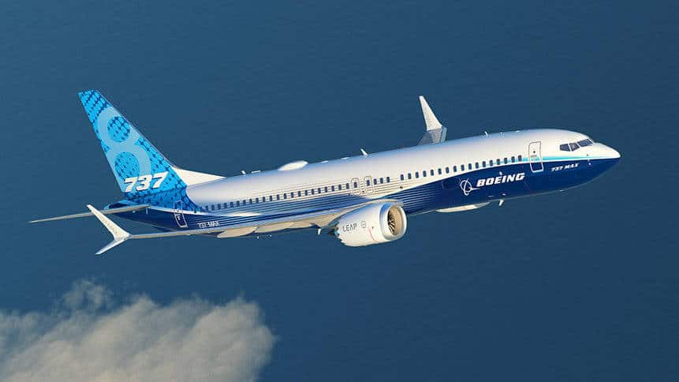
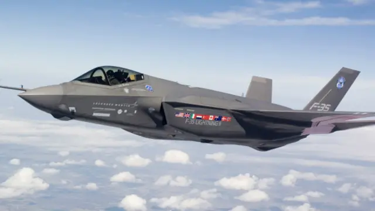
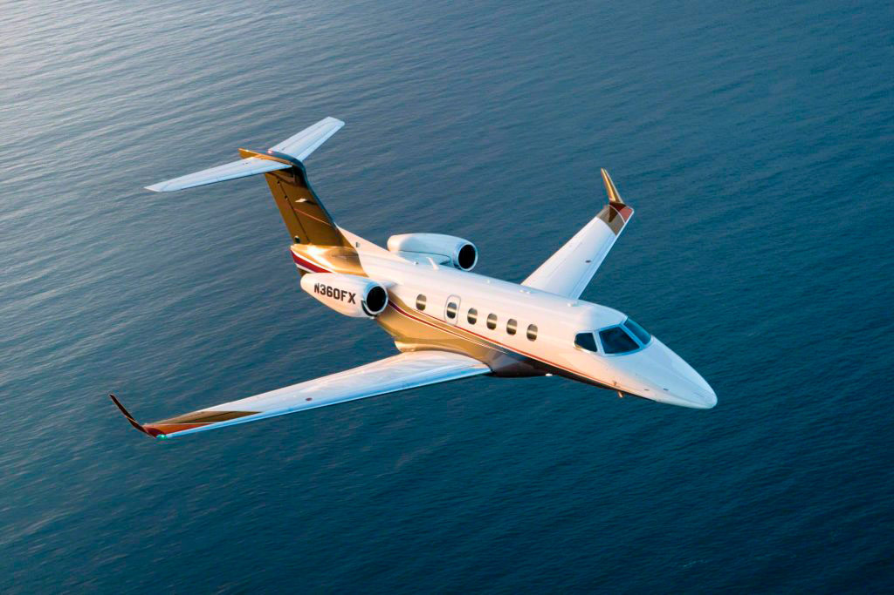
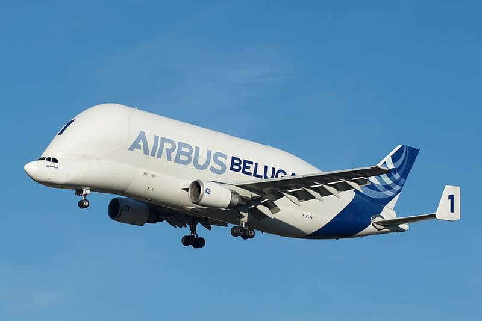

Conoce los distintos tipos de aviones
Los aviones comerciales transportan cientos de pasajeros a destinos alrededor del mundo.
Equipados para el combate y misiones estratégicas, estos aviones son utilizados por fuerzas armadas.
Los aviones privados ofrecen lujo y comodidad para viajes personales o de negocios.
Diseñados para transportar grandes volúmenes de carga, estos aviones son esenciales para la logística global.
